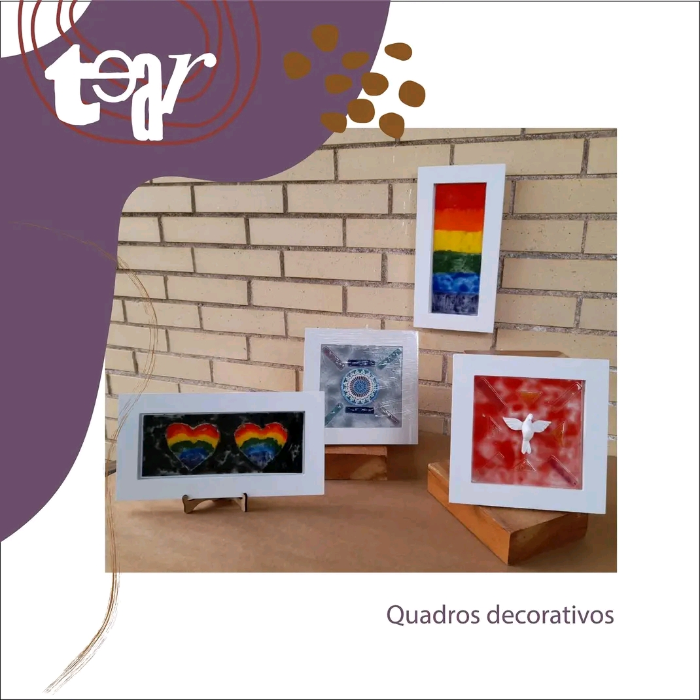
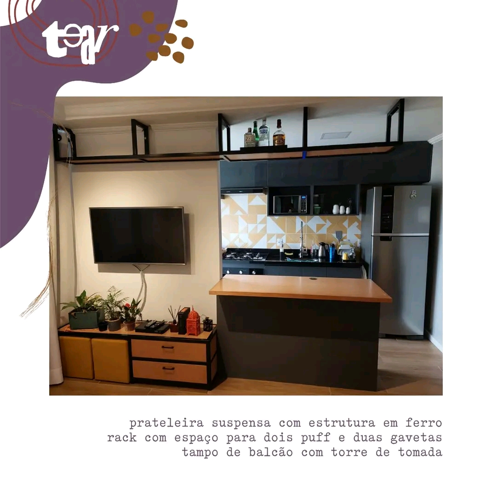
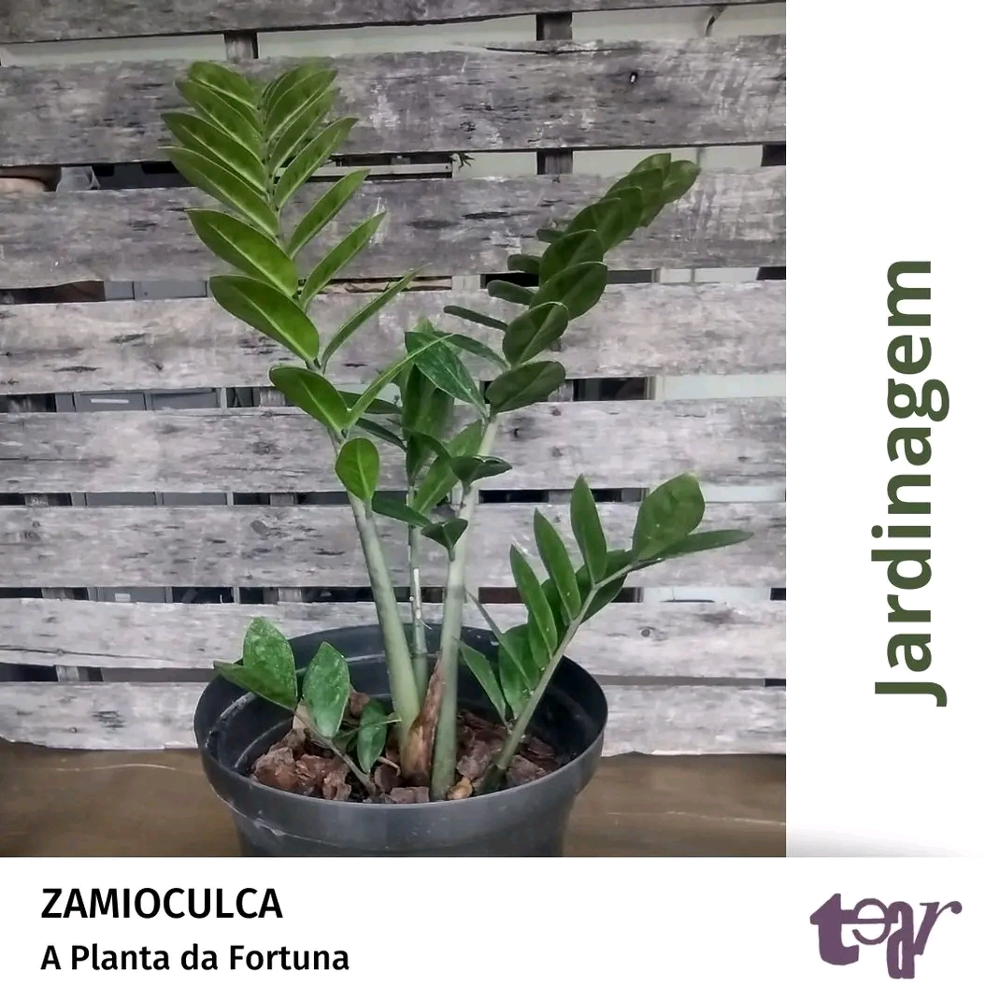
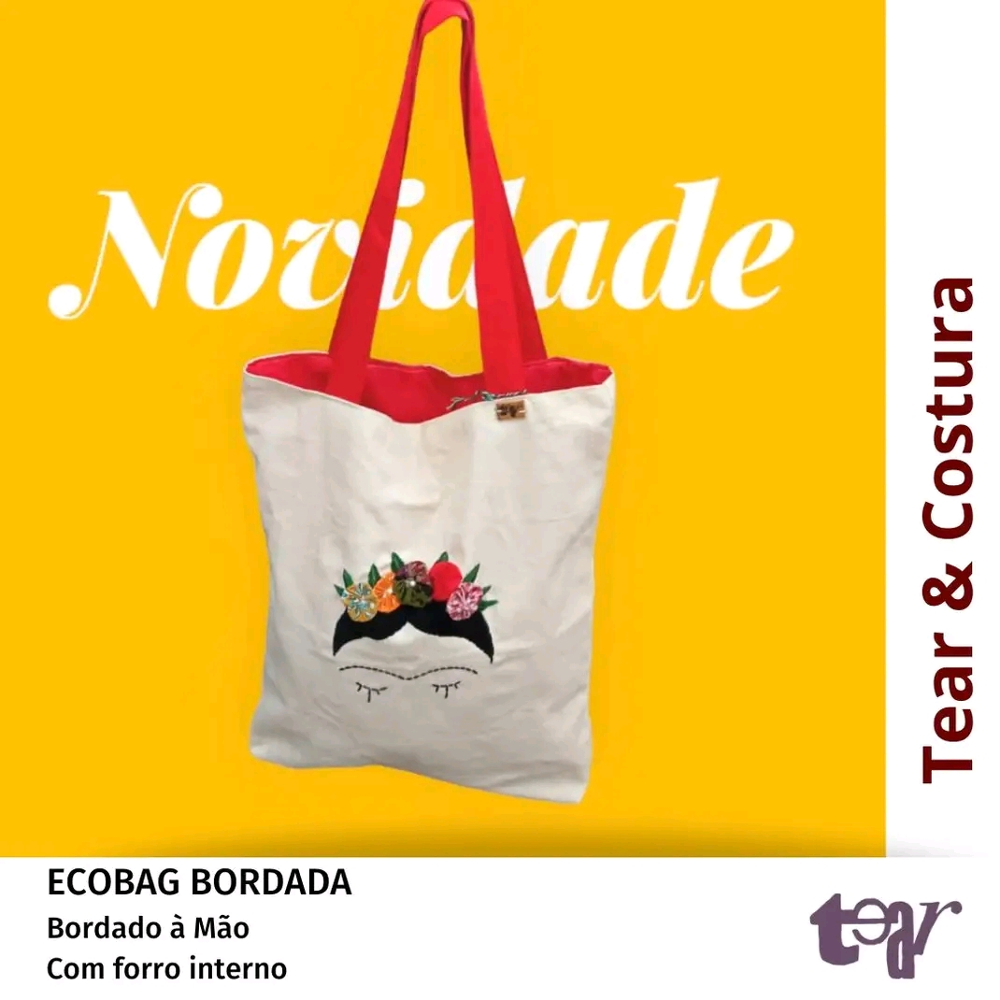

Pilares
Trabalho e inclusão social
O Projeto Tear atua na inclusão social pelo trabalho de usuários da Rede de Saúde Mental de Guarulhos. Ele surge na perspectiva de que o trabalho proporciona um lugar social e geração de renda, garantindo o direito de pessoas em vulnerabilidade psicossocial.
O Tear se organiza em 9 oficinas de trabalho: Culinária, Encadernação, Jardinagem, Marcenaria, Mosaico, Papel Artesanal, Serigrafia, Tear e Costura e Vitral. Os participantes do Projeto trabalham em uma delas, integrando-se em diversas partes do processo. Atuam no desenvolvimento de produtos, execução, reuniões autogestionárias, comercialização.
Luta antimanicomial
A Luta Antimanicomial é um movimento que luta pelos direitos das pessoas em sofrimento mental, propondo o cuidado em liberdade e o exercício da cidadania. Busca a inserção do sujeito em ambientes e dinâmicas que proporcionem o viver na sociedade e emancipação daqueles que sofrem com estigmas decorrentes de diagnósticos psiquiátricos. O dia da Luta Antimanicomial é comemorado dia 18 de maio.
Economia solidaria
A Economia Solidária é uma forma diferente de se relacionar com o trabalho e geração de renda. Entre seus princípios, há a cooperação, solidariedade e dimensão econômica. Segui-los implica na prática da autogestão: coletividade no trabalho e tomada de decisões.
O Projeto Tear, inserido na Política Nacional de Saúde Mental, escolhe a economia solidária como estratégia de trabalho, por sua forma horizontal de funcionamento e por dar escuta a vozes que foram e são silenciadas.
História
O Projeto Tear O Tear é um serviço da rede de atenção psicossocial do município de Guarulhos (SP), que atua no campo da inclusão social pelo trabalho, convivência e cultura da população em situação de sofrimento psíquico e/ou outras vulnerabilidades socioafetivas. Fundado em 2003, o Tear é o resultado de uma parceria entre a Prefeitura Municipal de Guarulhos, os Laboratórios Pfizer, Associação Cornélia Vlieg (até 07/2012), Associação Saúde da Família e Associação Inclui Mais. Dentro dos preceitos da Reforma Psiquiátrica, o Tear consolida-se como uma iniciativa pública de geração de trabalho e renda a partir da aproximação com o campo da economia solidária, gerando valores como cooperação, coletividade, solidariedade, sustentabilidade e promoção da saúde. As estratégias utilizadas propõem atividades artesanais e de serviços por meio de nove oficinas de trabalho e um espaço cultural denominado multiforme, com diferentes intervenções culturais e de convívio, reafirmando o potencial produtivo e criativo dos participantes. O Tear vem se tornando referência no Brasil nestes últimos anos como espaço de inovação e desenvolvimento de novas tecnologias sociais através de estratégias potentes, que vêm, efetivamente, fortalecendo a autonomia, fomentando a contratualidade social e melhorando as condições de vida de seus participantes ao promover a inclusão social pelo trabalho, cultura e convivência.
Nossas Oficinas
Marcenaria
Trabalhamos desenvolvendo móveis, brinquedos, jogos, objetos decorativos e outros utensílios. Com um pensamento voltado para a sustentabilidade, reaproveitamos madeiras que são descartadas como pallets, caixas de transporte e sobras de podas de árvores, além de usar produtos a base de água na montagem e acabamento, agredindo menos o ambiente. Seguimos como característica um design contemporâneo misturado com a rusticidade e as marcas das madeiras reaproveitadas. Trabalhamos sob encomenda na concepção e desenvolvimento do produtos.
Vitral
Produzimos peças decorativas, utilitárias, objetos artísticos, bijuterias, peças com reaproveitamento de garrafas, confeccionadas com técnicas de fusão em vidro. O vidro fundido propicia desafios técnicos possibilitando oportunidades de criação e transformação artística através das técnicas “fusing” e da “fusão em vidro”. No processo de produção, além da utilização do vidro industrializado também utilizamos material de reaproveitamento como garrafas, potes e vidros geralmente descartados, criando peças artísticas, criativas e sustentáveis. A Oficina de Vitral é um grupo de trabalho do Tear que desenvolve arte em vidro através de técnicas como cortes, fusing (vidro fundido), esmaltação e decoupage. A oficina produz peças decorativas, utilitárias, objetos artísticos, bijuterias e peças. No processo da produção são utilizados materiais de reaproveitamento, tais como: garrafas, potes e vidros descartados. Com isso, são criadas peças artísticas, criativas e sustentáveis.
Tear & Costura
Trabalhamos artesanalmente utilizando fios e tecidos como base para nossas criações. Resgatamos da cultura brasileira a técnica artesanal de tecelagem manual (tecer entrelaçando fios). Utilizamos como instrumento o tear de pente liço para produzir acessórios como cachecóis, xales, mantas, além de tecidos exclusivos. Com a técnica da costura desenvolvemos principalmente acessórios: bolsas, necessaires, estojos, além de sacolas ecológicas (ecobags) personalizadas, incentivando a substituição das embalagens plásticas no mercado. Trabalhamos sob encomenda com produtos para presentes, brindes corporativos e eventos.
Serigrafia
Somos especializados na prestação de serviços com as técnicas de serigrafia, transfer e sublimação. Queremos ajudar você, seu projeto ou empresa, com a impressão em CAMISETAS, CANECAS e outros ITENS PERSONALIZADOS.
Mosaico
Atuamos no trabalho criativo de juntar, elaborar e compor com pastilhas e azulejos, originando um produto com novas formas, cores e significados, de maneira coletiva e colaborativa. Desenvolvemos trabalhos de mosaico a partir do reaproveitamento de materiais, como cacos e objetos descartáveis de madeira. É um trabalho totalmente manual e artesanal, pois mantemos a singularidade do corte, onde cada peça se torna única e expressiva. Nossas técnicas primam pela reutilização de materiais, agregando ao processo produtivo a ideia do cuidado ao meio ambiente e sustentabilidade. Desenvolvemos produtos exclusivos e de acordo com a demanda dos nossos clientes.
Papel Artesanal
A Oficina de papel produz papeis artesanais com semente e fibras vegetais. Com estes papeis, criamos produtos como: blocos de anotações, cartões temáticos, marcadores de página e envelopes, também tág para embalagens, cartões de visita e Posters. O poster surgiu com a proposta de reaproveitamento de sobras tanto de papeis artesanais assim como de revistas, impressos e jornais. Cada trabalho é único e singular já que expressam a particularidade de cada participante além de ter como objetivo concientizar sobre a importância da reciclagem, aproveitamento de materiais na geração de menos lixo e a preservação do meio ambiente. Trabalhamos com encomendas especiais, assim como na produção de brindes para eventos.
Encadernação
A oficina de encadernação do TEAR vem, desde 2009, produzindo diferentes linhas de cadernos artesanais, livros de pequenas tiragens, agendas e planners. Nossos produtos são confeccionados através de algumas técnicas de encadernação artesanal e em nosso processo de produção são utilizados diferentes tipos de papéis e outros materiais para as capas e acabamentos. Temos atualmente quatro linhas de cadernos: linha pobre, linha tecido, linha brochura, linha viagem mix, além das agendas e planners. Trabalhamos também com brindes corporativos e trabalhos sob encomenda, como encadernações e restauros especiais.
Culinária
O empreendimento econômico solidário Sabor Saúde e Sustento prepara produtos e presta serviços no ramo alimentício de forma artesanal, como: geleias, biscoitos, produtos temáticos, sucos pasteurizados, serviço de coffee break para eventos e kit infantil para escolas.
Jardinagem
A Oficina de Jardinagem produz arranjos florais com orquídea e kokedama, também comercializa mudas de plantas variadas tais como: Zamioculca(planta da fortuna), Espada de são Jorge, bambu-da-sorte, ora-pro-nóbis, suculentas e cactos; dentre outras. No nosso Jardim uma das nossas premissas é a parceria entre oficinas e outros espaços. Partindo deste principio, o cliente pode escolher o vaso de cerâmica, madeira, mosaico ou vidro, além de que oferecemos oficinas para públicos diversos em diferentes equipamentos da rede intersetorial como os SESCs e CAPS. No cotidiano os participantes da oficina trabalham no cultivo, rega, adubagem e demais cuidados com as plantas buscando a conscientização e o preservação do meio ambiente. Aceitamos encomendas de mudas e arranjos para eventos no geral e convites para participação em feiras; oferecendo cursos e/ou oficinas.
Loja
Veja abaixo alguns dos nossos produtos.
Quadros decorativos
Lindos quadros para enfeitar o seu lar.
Prateleira
Prateleira suspensa personalizada.
Zamioculca
Quer atrair dinheiro para a sua casa? A Zamioculca resolve
Ecobag
Bolsa retornável personalizada.
Entre em contato
Quer saber mais sobre o projeto? Entre em Contato.
Notícias
Conheça um pouco mais sobre artesanato

7 artesãs brasileiras e empreendedoras que sustentam o lar e a família
Aproximadamente 90% da produção artesanal do país é assinada por mulheres, muitas delas chefes de família
Leia Mais
Arte indígena: a importância nas aldeias e a garantia de um comércio justo
Artesãos indígenas e especialistas discutem a dinâmica de produção nas aldeias e apresentam alternativas para a comercialização
Leia Mais
Uma viagem pelo artesanato brasileiro
Conheça um pouco sobre o artesanato brasileiro e suas regiões.
Leia mais